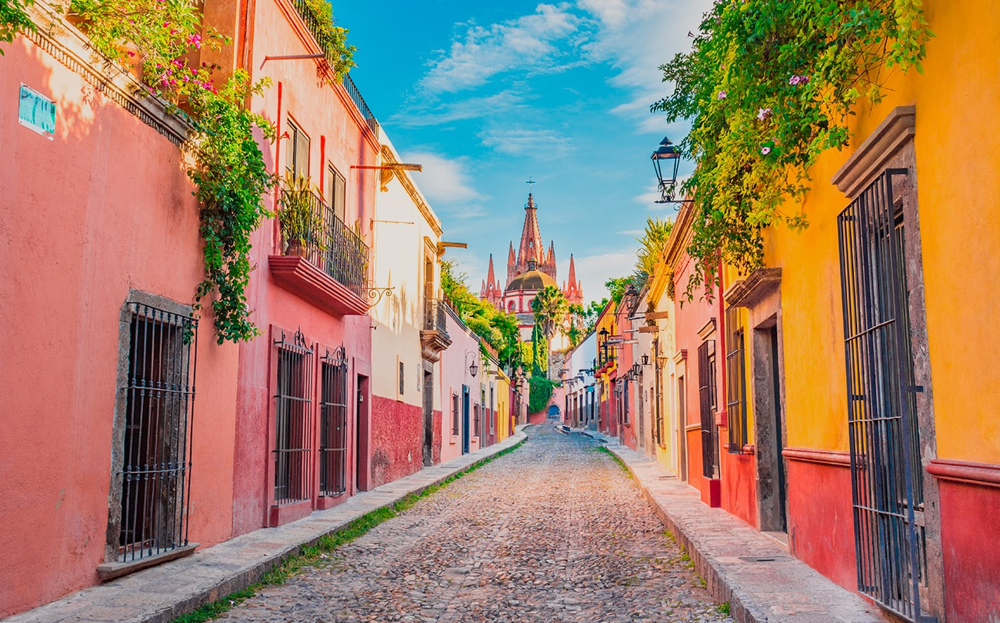

| LUGAR | LOCALIZACION | CARACTERISTICAS | ESCUDO |
|---|---|---|---|

| Es una ciudad portuaria mexicana, que se encuentra en la costa del Golfo de México, en el estado de Veracruz. Es uno de los puertos más antiguos y grandes del país, fundado en el siglo XVI por colonizadores españoles. |
 |
|
 | Guanajuato, oficialmente llamado Estado Libre y Soberano de Guanajuato, es uno de los treinta y un estados que, junto con la Ciudad de México. |
 |